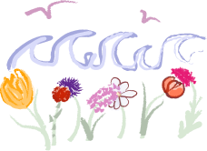

Midsommarhelgen 2027 är ni bjudna till Lurön mitt på Värnern för att fira många år av kärlek mellan Clara och Oskar! Under tre dagar kommer firas rejält med mat, dryck, dans och mycket mer. Ni är välkomna att stanna så länge som ni vill under dessa dagar, och vi kan lova att det är inget ni kommer ångra.
Temat är MIDSOMMAR och Klädkod för bröllopsdagen är finklädsel, men inget VITT ELLER GRÖNT.
På denna lilla sida hittar ni all information ni behöver, från datum och agenda till detaljer kring vägbeskrivning och packlista.
Temat är MIDSOMMAR och Klädkod för bröllopsdagen är finklädsel, men inget VITT ELLER GRÖNT.
